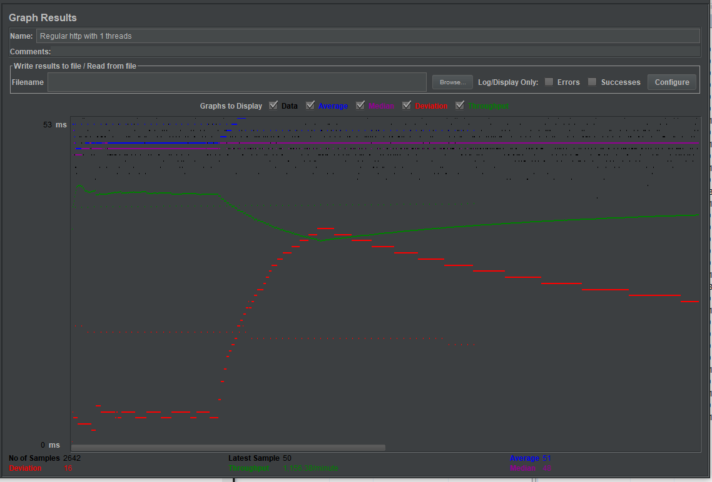
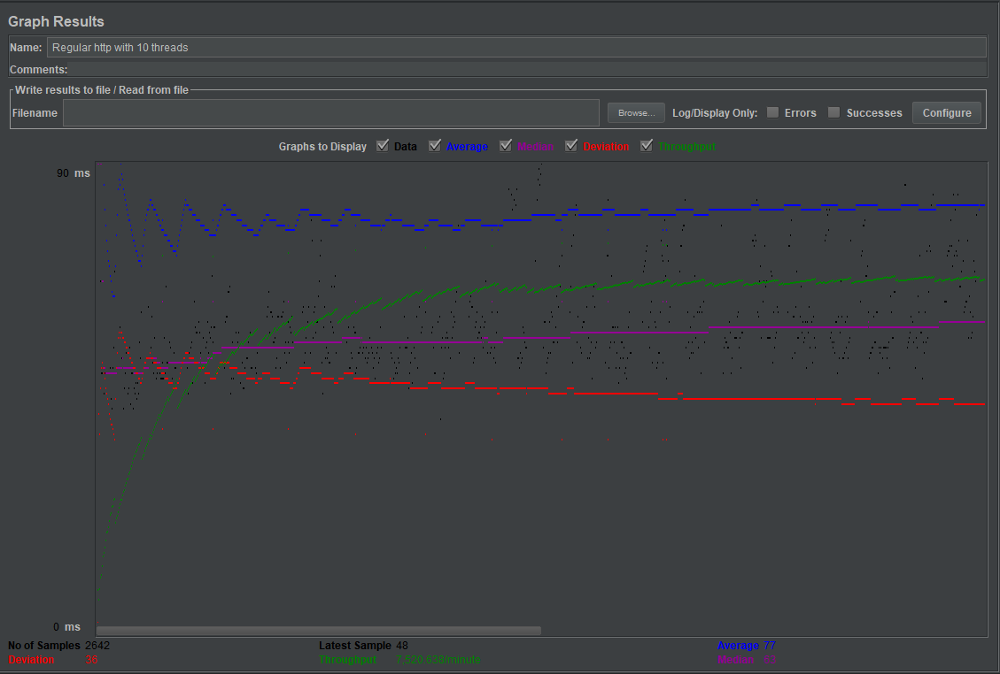
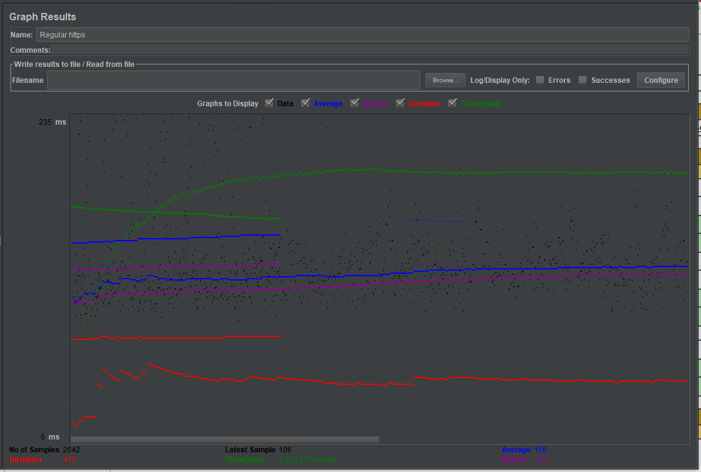
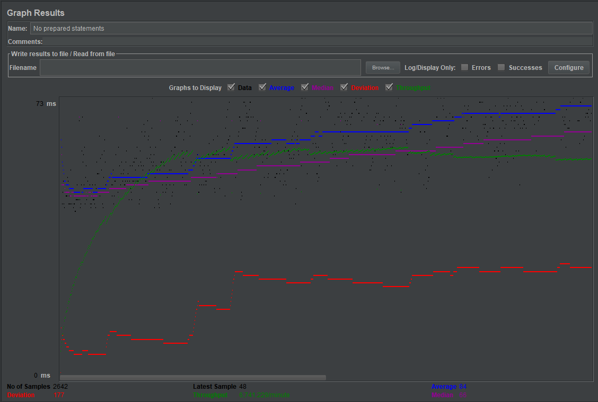
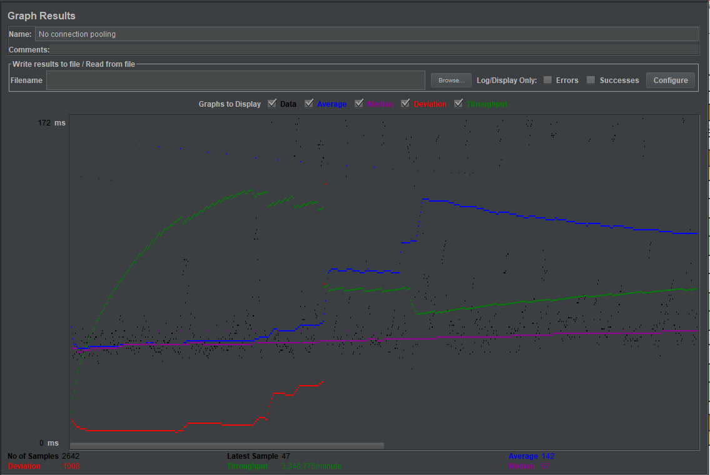
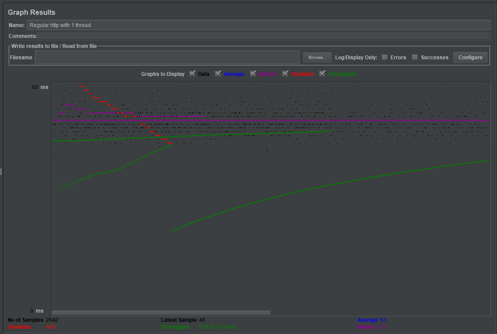
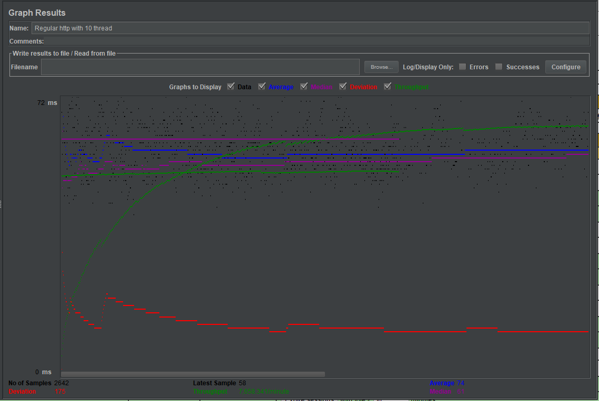
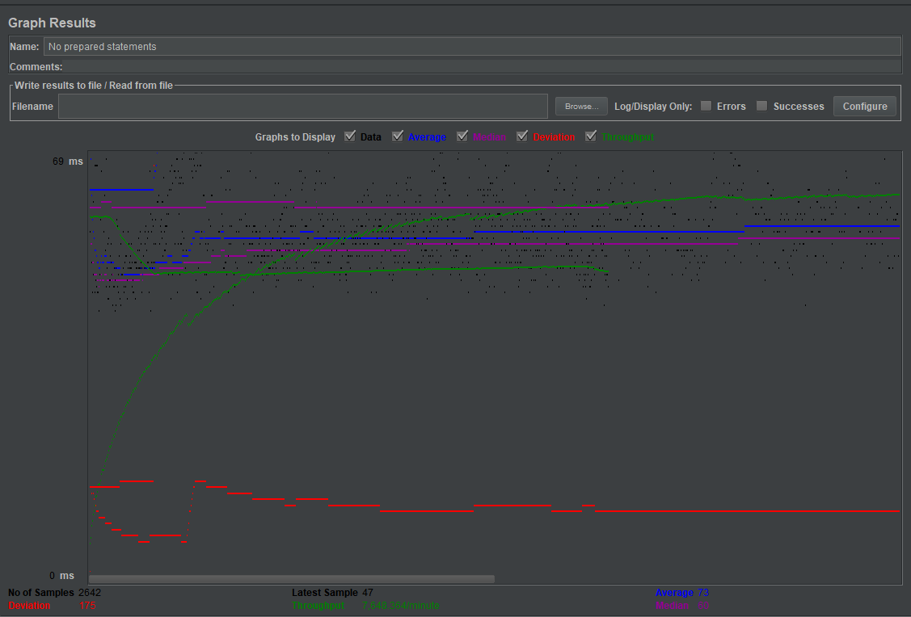
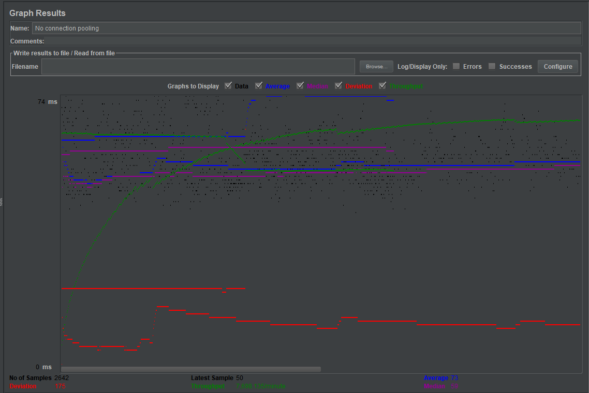

| Single-instance version cases | Graph Results Screenshot | Average Query Time(ms) | Average Search Servlet Time(ms) | Average JDBC Time(ms) | Analysis |
| Case 1: HTTP/1 thread |  | 51 | 1.321 | 0.721 | As we expected, this case is the fastest as there is only one thread(user) sending requests and utilizes both connection pooling and prepared statements. It also doesn't suffer from the overhead of redirection like the scaled version. |
| Case 2: HTTP/10 threads |  | 77 | 1.959 | 0.838 | As expected, this case is the fastest after case 1 as case 1 only runs on on thread(user). With 10 threads sending requests to the server at once, it is obvious that the server will become slower. The results show that connection pooling indeed helps as this case is faster than case 5 which had no connection pooling. |
| Case 3: HTTPS/10 threads |  | 156 | 1.910 | 0.822 | In this test case, the average query time was higher compared to every HTTP request in this version, even those with no connection pooling or no prepared statements. This shows how significant the added overhead of encrypting/decrypting data for HTTPS requests is. However the average search servlet time and the average JDBC times had decent timings, which show that connection pooling and prepared statements indeed helped with the timings. The https overhead is not part of ts and tj but adds to the average query time. |
| Case 4: HTTP/10 threads/No prepared statements |  | 84 | 1.990 | 0.873 | As expected, the case without prepared statements proved to be slower than case 2 which utilized prepared statements. The average servlet time and average JDBC were also worse than in case 2. This shows thats prepared statements makes for better timings. |
| Case 5: HTTP/10 threads/No connection pooling |  | 142 | 1.741 | 0.773 | As we expected, because there was no connection pooling the average query time was worse compared to case 4 and case 2 which both utilized connection pooling. However, the average servlet time and average jdbc were faster in this case than in case 4 and case 2 which is unexpected. I believe the reason might have been network or latency related because one of my roommates started to watch Netflix which may have slowed down our internet. |
| Scaled version cases | Graph Results Screenshot | Average Query Time(ms) | Average Search Servlet Time(ms) | Average JDBC Time(ms) | Analysis |
| Case 1: HTTP/1 thread |  | 63 | 1.520 | 0.692 | As expected, this case was the fastest out of all the cases in the scaled version. This is because it is using prepared statements and connection pooling which helps average servlet time and average JDBC time respectively and also because there is only one thread(user) involved. The times here are slightly worse than the single instance version case 1 which had the same case, we believe the difference in the timings is caused by the redirection overhead of the load balancer or it might just simply be a network speed/latency issue |
| Case 2: HTTP/10 threads |  | 74 | 1.652 | 0.758 | As we expected, the average query time is slower than in case 1 as more threads(users) requesting on the server at once will slow down response times. From comparing it with case 3 and case 4, we noticed that the average query time was actually almost the same if not the same as these cases. The reason for this is probably due to the nature of load balancing. In the version without load balancing (single instance) the cases that were mentioned before had significant differences. This shows that load balancing helped significantly |
| Case 3: HTTP/10 threads/No prepared statements |  | 73 | 2.122 | 0.994 | As expected, the average servlet time is worse than the average servlet time of case 2. This proves that the absence of prepared statements made a difference as it slowed down the average servlet time. The average JDBC time is also worse than case 2 but not by that much, so this is not worthy to be analyzed. Compared to case 3 in the single-instance version this case is faster, this proves that load balancing helped increase overall speeds of requests |
| Case 4: HTTP/10 threads/No connection pooling |  | 73 | 1.837 | 0.831 | As expected, the average servlet time and average JDBC time is worse than in case 2. This proves that the absence of connection pooling made requests suffer a slowdown in their timings, therefore connection pooling does make a significant difference. The average query time in this version of not using connection pooling compared to the single instance version is signficantly better, the reason for this is due to the use of load balancing. Load balancing significantly improves average query time. |